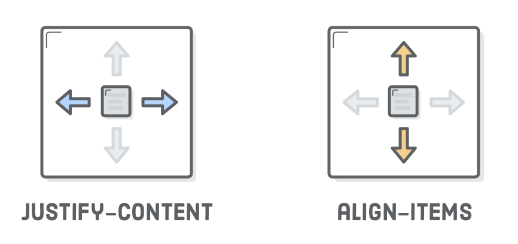

Flex containers only know how to position elements that are one level deep (i.e., their child elements).
They don’t care one bit about what’s inside their flex items. This means that grouping flex items is another weapon in your layout-creation arsenal.
Wrapping a bunch of items in an extra results in a totally different web page.
Cross-axis (vertical) alignment

The available options for align-items is similar to justify-content:
center
flex-start (top)
flex-end (bottom)
stretch
baseline
wrapping flex items
Flexbox is a more powerful alternative to float-based grids. Not only can it render items as a grid—it can change their alignment,
direction, order, and size, too. To create a grid, we need the flex-wrap property.
flex container direction
“Direction” refers to whether a container renders its items horizontally or vertically.So far,
all the containers we’ve seen use the default horizontal direction,
which means items are drawn one after another in the same row before popping down to the next column when they run out of space.
alignment considerations
flex container order
Up until now, there’s been a tight correlation between the order of our HTML elements and the way boxes are rendered in a web page.
flex item order
Flex item alignment
We can do the same thing with vertical alignment.
center
flex-start (top)
flex-end (bottom)
stretch
baseline
Flexible items
Flex items are flexible: they can shrink and stretch to match the width of their containers.
The flex property defines the width of individual items in a flex container.
static item widths
flex items and auto-margins
Auto-margins in flexbox are special. They can be used as an alternative to an extra div when trying to align a group of items to the left/right of a container. Think of auto-margins as a “divider” for flex items in the same container.
.container {
margin-left: auto;
}
summary
Use display: flex; to create a flex container.
Use justify-content to define the horizontal alignment of items.
Use align-items to define the vertical alignment of items.
Use flex-direction if you need columns instead of rows.
Use the row-reverse or column-reverse values to flip item order.
Use order to customize the order of individual elements.
Use align-self to vertically align individual items.
Use flex to create flexible boxes that can stretch and shrink.